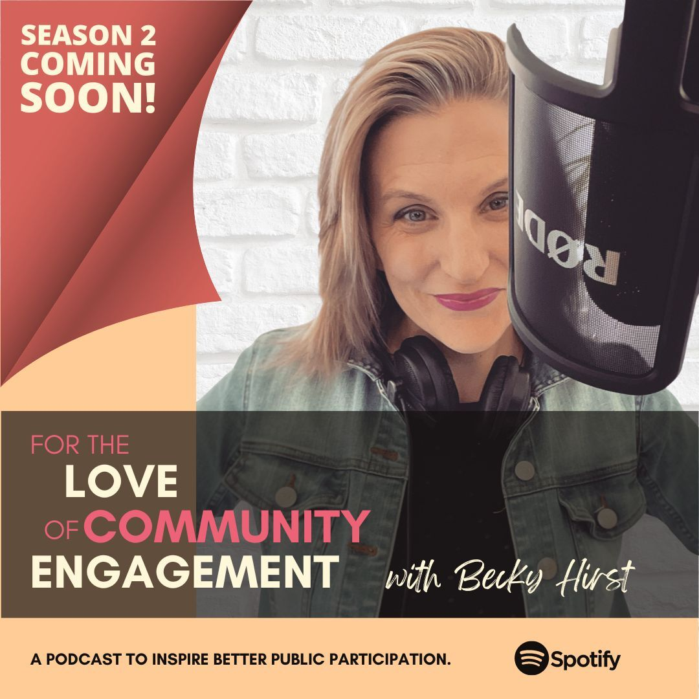

Where it all began
Becky's career began in the United Kingdom in the late 1990s, working directly alongside communities that had been systematically excluded from the decisions shaping their lives. She learned early that genuine participation isn't a process — it's a commitment. And most organisations weren't making it.
In 2005 she brought that conviction to Australia, where she quickly established herself as one of the sector's most respected voices on community engagement. She worked with local governments, infrastructure bodies, not-for-profits and corporate organisations — always asking the same question: Are you actually listening, or are you going through the motions?

On the ground. In the room. Always listening.Over the years, Becky's work expanded from frontline practice into strategy, leadership, training, publishing, and advocacy. She became not just a practitioner but an architect of the field — shaping how the sector thinks about engagement at the deepest level.
Today she operates across consulting, speaking, education and community building — bringing the same energy she had in 1997 and the wisdom of 27 years of seeing what works, what fails, and why.